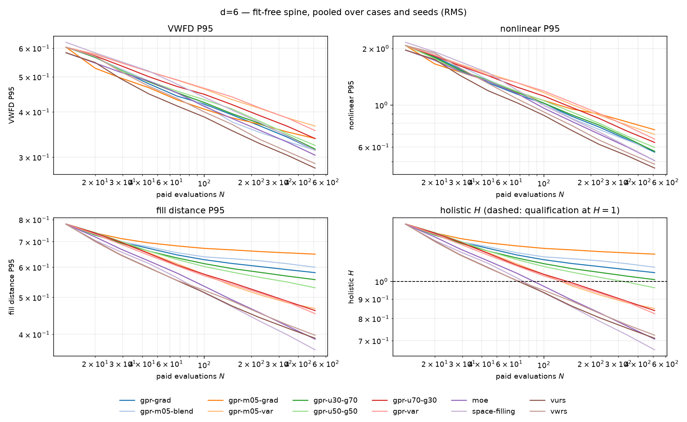
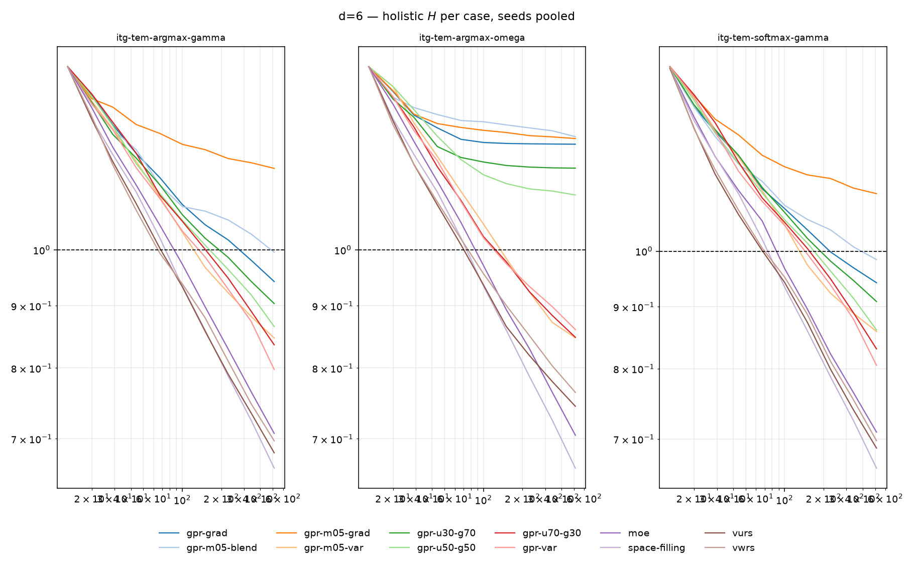
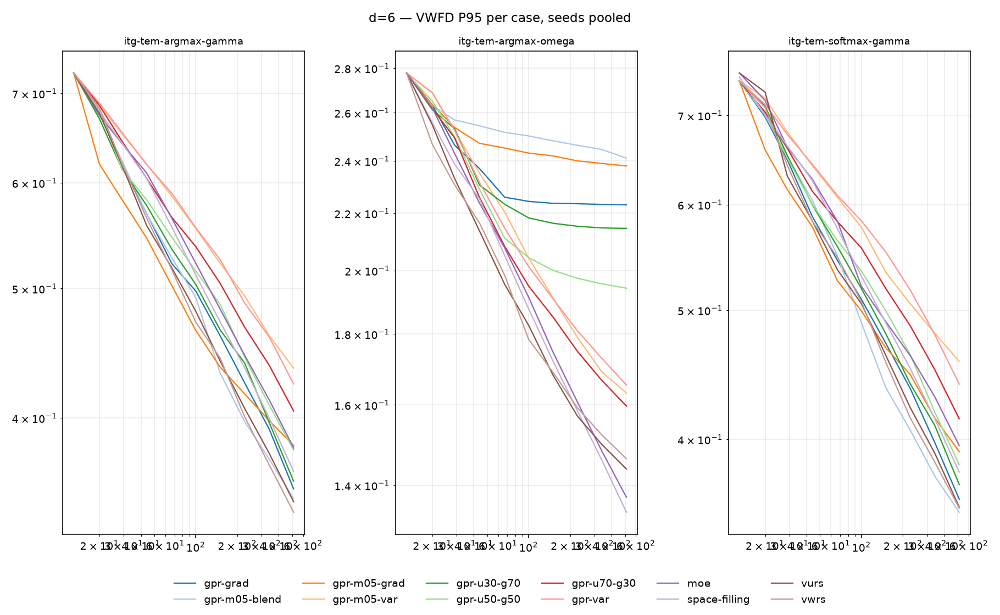
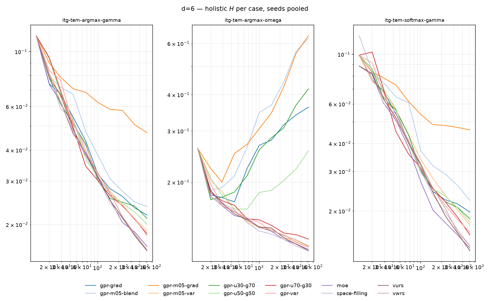

Partial run: this sheet reflects 95 of 288 trajectories.
Commit e777024fef, budgets
{'5': 512, '6': 512, '8': 1024}, 65536 reference points,
seeds [0, 1, 2].
Ordered by mean holistic H, which above three dimensions is built from fit-free terms only. The two greyed columns are the ported four-term H and the thin-plate-spline RMS: both are shown for continuity with the 2D and 3D scores and neither decides the ranking, because that evaluator's error rises with budget on concentrated designs.
| arm | n | mean H | max H | VWFD P95 | nonlinear P95 | fill P95 | ported H | RBF RMS |
|---|---|---|---|---|---|---|---|---|
| space-filling | 9 | 0.662 | 0.664 | 0.2922 | 0.414 | 0.3642 | 0.657 | 0.0681 |
| moe | 7 | 0.706 | 0.709 | 0.2781 | 0.383 | 0.3885 | 0.730 | 0.0777 |
| vurs | 7 | 0.709 | 0.746 | 0.2608 | 0.350 | 0.3901 | 0.723 | 0.0770 |
| vwrs | 8 | 0.722 | 0.773 | 0.2711 | 0.383 | 0.3973 | 0.703 | 0.0749 |
| gpr-var | 8 | 0.823 | 0.871 | 0.3310 | 0.521 | 0.4527 | 0.748 | 0.0743 |
| gpr-u70-g30 | 8 | 0.839 | 0.855 | 0.3153 | 0.500 | 0.4615 | 0.773 | 0.0792 |
| gpr-m05-var | 8 | 0.850 | 0.869 | 0.3390 | 0.552 | 0.4673 | 0.760 | 0.0750 |
| gpr-u50-g50 | 8 | 0.956 | 1.123 | 0.3104 | 0.471 | 0.5257 | 1.190 | 0.1576 |
| gpr-u30-g70 | 8 | 1.004 | 1.204 | 0.3074 | 0.448 | 0.5520 | 1.661 | 0.2568 |
| gpr-grad | 8 | 1.047 | 1.266 | 0.3065 | 0.445 | 0.5756 | 1.491 | 0.2225 |
| gpr-m05-blend | 8 | 1.084 | 1.251 | 0.3090 | 0.452 | 0.5962 | 2.227 | 0.3830 |
| gpr-m05-grad | 8 | 1.178 | 1.290 | 0.3300 | 0.583 | 0.6481 | 2.346 | 0.3923 |
Spine H driver across completed trajectories:
fill_p95 — 95Ported H driver, for comparison:
vwfd_p95 — 59nmae — 33p95_error — 3


